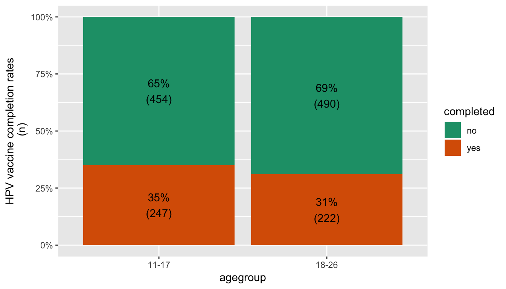
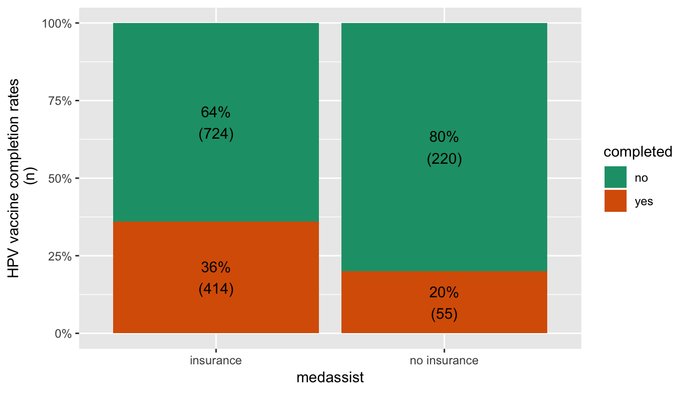
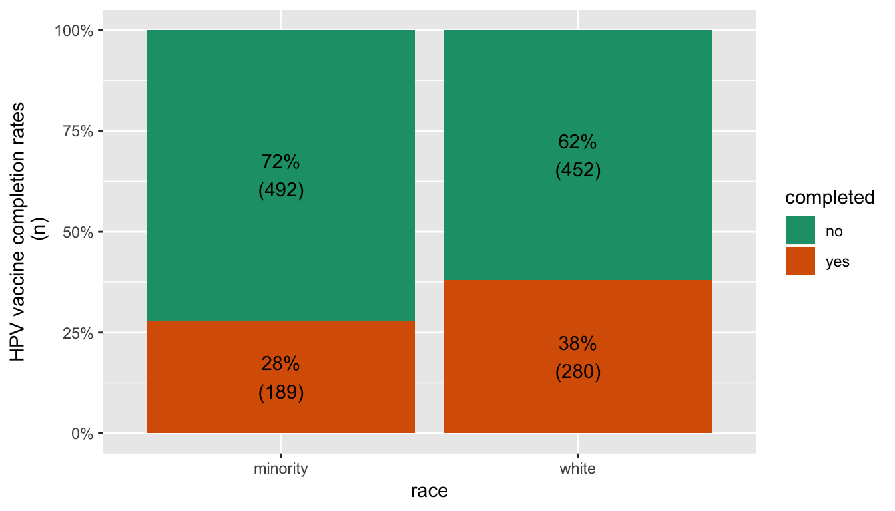
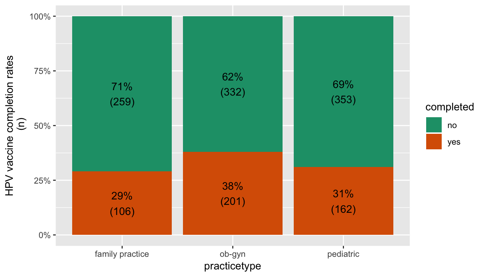
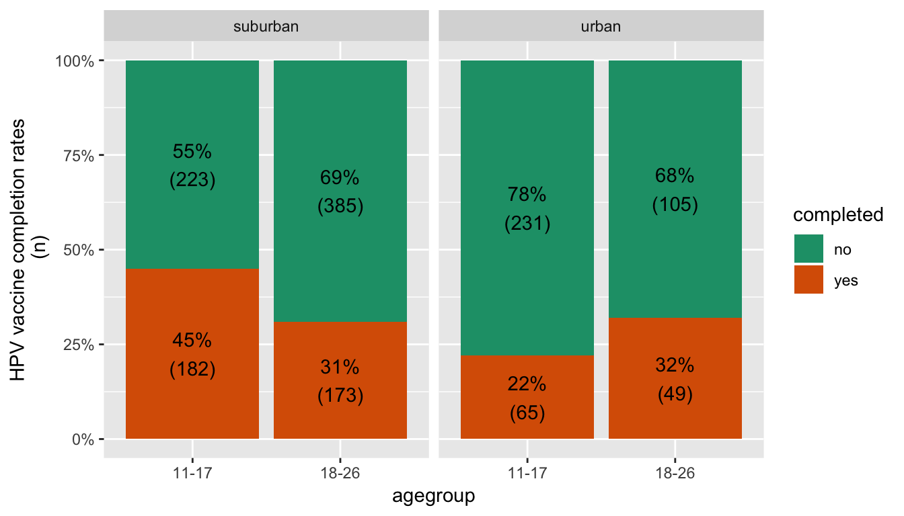

Analysis of Human Papillomavirus Vaccine (HPV) Completion Rate

Introduction
This post attempts to analyze the characteristics of non-pregnant females between the ages of 11 and 26 who started the three-shot sequence of the HPV vaccine and subsequently completed the sequence within 12 months. The data used was collected by the Johns Hopkins Institutional Review Board between January 1, 2007 and June 30, 2008. This sample consists of 1,413 patients of which 469 (33.2%) completed the vaccine within 12 months. The remaining patients either did not complete the sequence or took more than twelve months to complete the sequence. The variables included are agegroup (11-17, 18-26), race (white, minority), medassist (patient had medical insurance, patient did not have medical insurance),locationtype (suburban, urban), practicetype (family practice, ob-gyn, pediatric) and completed (completed vaccine within 12 months, did not complete vaccine within 12 months). All analyses was conducted at the 5% significance level.
Preliminary Analysis
Let’s first load and format the data. We’ll then create a bar graph and do a proportion test for each predictor to determine how it is associated with completion rate.
#import and format data.
df <- read_csv("projects_data/hpv_data.csv") %>%
#convert all variable to lowercase
rename_all(tolower) %>%
#give variable categories proper names
mutate(race = case_when(race == 0 ~ 'white',
TRUE ~ 'minority'),
completed = case_when(completed == 0 ~ 'no',
TRUE ~ 'yes'),
locationtype = case_when(locationtype == 0 ~ 'suburban',
TRUE ~ 'urban'),
practicetype = case_when(practicetype == 0 ~ 'pediatric',
practicetype == 1 ~ 'family practice',
TRUE ~ 'ob-gyn'),
medassist = case_when(medassist == 0 ~ 'insurance',
TRUE ~ 'no insurance'),
agegroup = case_when(agegroup == 0 ~ '11-17',
TRUE ~ '18-26')) %>%
#convert all variables to factors
mutate_all(as.factor) %>%
#put dependent variable first in data frame
select(completed, everything())
#Function to visualize completion rates. Takes a predictor as input.
create_bargraph <- function(var_name){
df %>%
group_by(!!enquo(var_name), completed) %>%
summarise(count = n()) %>%
mutate(percentage = round(count/sum(count), 2)) %>%
ggplot(., aes(x = !!enquo(var_name), y = percentage, fill = completed))+
geom_col()+
scale_y_continuous(labels = percent)+
geom_text(aes(label = paste0(round(percentage*100),"%\n", '(',count,')')), position = position_stack(vjust = 0.5))+
scale_fill_brewer(palette = "Dark2")+
labs(y = "HPV vaccine completion rates\n (n)")
}
#function to create data frame for proprotion test.
#Takes predictor as input
prop_data <- function(var_name){
df %>%
group_by(!!enquo(var_name), completed) %>%
summarise(count = n()) %>%
spread(completed, count) %>%
mutate(total = no + yes) %>%
rename("group" = !!enquo(var_name), "success" = "yes")
}
#function for two-sample proportion tests. Takes prop_data as input
#this was mainly created to do a proportion test on
#practicetype as it contains three categories
prop_test <- function(x){
for (i in 1:(nrow(x)-1)){
for (j in 2:nrow(x)){
if (i != j & i < j ){
cat("--------------------------------------------------------------------\n")
cat(paste('Proportion test for:', x$group[i],"vs", x$group[j]))
print(prop.test(c(x$success[i], x$success[j]), c(x$total[i], x$total[j])))
}
}
}
}
create_output <- function(x){
create_bargraph(!!sym(x)) %>%
print()
prop_data(!!sym(x)) %>%
prop_test()
}
vars <- c('agegroup','locationtype','medassist','race','practicetype')
for (i in seq_along(vars)){
create_output(vars[i])
}
## --------------------------------------------------------------------
## Proportion test for: 11-17 vs 18-26
## 2-sample test for equality of proportions with continuity
## correction
##
## data: c(x$success[i], x$success[j]) out of c(x$total[i], x$total[j])
## X-squared = 2.4403, df = 1, p-value = 0.1183
## alternative hypothesis: two.sided
## 95 percent confidence interval:
## -0.009933481 0.091045536
## sample estimates:
## prop 1 prop 2
## 0.3523538 0.3117978## --------------------------------------------------------------------
## Proportion test for: suburban vs urban
## 2-sample test for equality of proportions with continuity
## correction
##
## data: c(x$success[i], x$success[j]) out of c(x$total[i], x$total[j])
## X-squared = 17.872, df = 1, p-value = 2.363e-05
## alternative hypothesis: two.sided
## 95 percent confidence interval:
## 0.06324615 0.16736652
## sample estimates:
## prop 1 prop 2
## 0.3686397 0.2533333
## --------------------------------------------------------------------
## Proportion test for: insurance vs no insurance
## 2-sample test for equality of proportions with continuity
## correction
##
## data: c(x$success[i], x$success[j]) out of c(x$total[i], x$total[j])
## X-squared = 26.063, df = 1, p-value = 3.305e-07
## alternative hypothesis: two.sided
## 95 percent confidence interval:
## 0.1066176 0.2209747
## sample estimates:
## prop 1 prop 2
## 0.3637961 0.2000000
## --------------------------------------------------------------------
## Proportion test for: minority vs white
## 2-sample test for equality of proportions with continuity
## correction
##
## data: c(x$success[i], x$success[j]) out of c(x$total[i], x$total[j])
## X-squared = 17.063, df = 1, p-value = 3.615e-05
## alternative hypothesis: two.sided
## 95 percent confidence interval:
## -0.15508657 -0.05487468
## sample estimates:
## prop 1 prop 2
## 0.2775330 0.3825137
## --------------------------------------------------------------------
## Proportion test for: family practice vs ob-gyn
## 2-sample test for equality of proportions with continuity
## correction
##
## data: c(x$success[i], x$success[j]) out of c(x$total[i], x$total[j])
## X-squared = 6.8576, df = 1, p-value = 0.008827
## alternative hypothesis: two.sided
## 95 percent confidence interval:
## -0.15115096 -0.02224851
## sample estimates:
## prop 1 prop 2
## 0.2904110 0.3771107
##
## --------------------------------------------------------------------
## Proportion test for: family practice vs pediatric
## 2-sample test for equality of proportions with continuity
## correction
##
## data: c(x$success[i], x$success[j]) out of c(x$total[i], x$total[j])
## X-squared = 0.4798, df = 1, p-value = 0.4885
## alternative hypothesis: two.sided
## 95 percent confidence interval:
## -0.08795107 0.03964677
## sample estimates:
## prop 1 prop 2
## 0.2904110 0.3145631
##
## --------------------------------------------------------------------
## Proportion test for: ob-gyn vs pediatric
## 2-sample test for equality of proportions with continuity
## correction
##
## data: c(x$success[i], x$success[j]) out of c(x$total[i], x$total[j])
## X-squared = 4.254, df = 1, p-value = 0.03916
## alternative hypothesis: two.sided
## 95 percent confidence interval:
## 0.003182059 0.121913116
## sample estimates:
## prop 1 prop 2
## 0.3771107 0.3145631Based on the results of the two sample test of equality of proportions we see that there is no significant difference in the completion rates between the two age groups (p > 0.05) and there is also no significant difference in the completion rates between patients that attended pediatric clinics and family practice clinics (p > 0.05). However, there is a significant difference between the other comparisons as all p-values were below 0.05.
For instance, we can conclude that the population proportion of completion rates differ for patients that attended suburban clinics and urban clinics. The sample values (\(\hat{p}_1\) = 0.37, \(\hat{p}_2\) = 0.25) suggests that the population proportion is higher for patients that attended suburban clinics. Additionally, if we were to collect 100 different samples from the population of women aged 11-26 who enrolled in the anti-HPV vaccination regimen the true proportion of completion rates would be between 6.3% and 16.7% higher for patients that attended suburban clinics compared to urban clinics approximately 95 out of 100 times.
Wow, statistics is not as confusing as everyone says it is 😄! We conducted a simple hypothesis test which showed that there was no significant difference in the completion rate between the two age groups and saw that the completion rate was higher for patients that attended suburban clinics when compared to patients that attended urban clinics. But, wait a minute! What’s going to happen to the relationship between age group and completion rate if we were to segregate the analysis by location type 💭? For instance, would there still not be a significant difference between the two age groups? Let’s determine if there are any changes in the completion rate between the two age groups when segregating by location type.
df %>%
group_by(locationtype, agegroup, completed) %>%
summarise(count = n()) %>%
mutate(percentage = round(count/sum(count), 2)) %>%
ggplot(., aes(x = agegroup , y = percentage, fill = completed))+
geom_col()+
facet_wrap(.~locationtype)+
scale_y_continuous(labels = percent)+
geom_text(aes(label = paste0(round(percentage*100),"%\n", '(',count,')')), position = position_stack(vjust = 0.5))+
scale_fill_brewer(palette = "Dark2")+
labs(y = "HPV vaccine completion rates\n (n)")
age_location <- df %>%
group_by(locationtype, agegroup, completed) %>%
summarise(total = n()) %>%
spread(completed,total) %>%
mutate(total = no + yes) %>%
rename("group" = agegroup, "success" = "yes")
#split dataframe by location type then apply prop_test to each section
lapply(split(age_location,age_location[,1]), function(x){
print(age_location[1,1])
prop_test(x)
})## # A tibble: 1 x 1
## locationtype
## <fct>
## 1 suburban
## --------------------------------------------------------------------
## Proportion test for: 11-17 vs 18-26
## 2-sample test for equality of proportions with continuity
## correction
##
## data: c(x$success[i], x$success[j]) out of c(x$total[i], x$total[j])
## X-squared = 18.984, df = 1, p-value = 1.318e-05
## alternative hypothesis: two.sided
## 95 percent confidence interval:
## 0.07541316 0.20328059
## sample estimates:
## prop 1 prop 2
## 0.4493827 0.3100358
##
## # A tibble: 1 x 1
## locationtype
## <fct>
## 1 suburban
## --------------------------------------------------------------------
## Proportion test for: 11-17 vs 18-26
## 2-sample test for equality of proportions with continuity
## correction
##
## data: c(x$success[i], x$success[j]) out of c(x$total[i], x$total[j])
## X-squared = 4.6969, df = 1, p-value = 0.03022
## alternative hypothesis: two.sided
## 95 percent confidence interval:
## -0.190904978 -0.006269469
## sample estimates:
## prop 1 prop 2
## 0.2195946 0.3181818## $suburban
## NULL
##
## $urban
## NULLIt appears that segregating by location type causes the previously observed relationship between age group and completion rate to change 😕. In fact, the completion rate in suburban clinics for the two age groups is the exact opposite of the completion rate in urban clinics. The completion rate for the 11-17 age group is significantly higher than the completion rate of the 18-26 age group in suburban areas (p < 0.05) but interestingly, the completion rate is significantly lower in urban areas for the 11-17 age group (p < 0.05). Based on the bar chart we see that 31% of patients in the 18-26 age group completed the vaccine at suburban clinics while 32% completed the vaccine at urban clinics. However, 45% of patients in the 11-17 age group completed the vaccine at suburban clinics while only 22% completed the vaccine at urban clinics. Thus, the completion rates for the 11-17 age group is affected by the clinic’s location and we can infer that 11 to 17 year old patients attending urban clinics may be at a higher risk for non-completion.
Logistic Regression
Let’s create a logistic regression model to explore the association between the predictors and completion rate. The main purpose here would be to isolate the relationship between the predictors and completion rate from the effects of any confounding variables. For instance, say that the completion rate is higher in suburban clinics and that females between the ages of 11 and 17 were more likely to attend suburban clinics. In this case, as we have seen in the previous section, inferences about the completion rate and age group gets manipulated by the effect of location type on age and completion rate. This strange effect is known as Simpson’s Paradox, a phenomenon in which trends that appear when the data is segregated into groups changes when the the data is aggregated. Thus, we’ll use logistic regression to adjust for this effect and draw more accurate conclusions as to which groups are at a high risk of non-completion.
#create desired reference groups
var_levels <- c("18-26","minority","no insurance","urban","family practice")
for (i in seq_along(var_levels)){
df[[i+1]] <- relevel(df[[i+1]], var_levels[i])
}
#function to create conditional models
conditional_model <- function(filter_vars,model_formula){
df_filtered <- df %>%
filter(eval(parse(text=filter_vars)))
glm(eval(parse(text=model_formula)),family = binomial, data = df_filtered) %>%
#exponentiate results to compute odds
tidy(conf.int=TRUE, exponentiate = TRUE) %>%
#remove intercept term
slice(-1) %>%
select(-c(std.error, statistic)) %>%
mutate(estimate = round(estimate, 2),
conf.low = round(conf.low,2),
conf.high = round(conf.high,2),
p.value = if_else(p.value < .05, 'p-value < 0.05', 'p-value > 0.05'))
}
#create conditional models. The output would not be displayed directly
#as we'll use inline code for the values
age26_location <- conditional_model("agegroup == '18-26'", "completed~locationtype")
age17_location <- conditional_model("agegroup == '11-17'", "completed~locationtype")
pediatric_agegroup <- conditional_model("practicetype == 'pediatric'", "completed~agegroup")
obgyn_agegroup <- conditional_model("practicetype == 'ob-gyn'", "completed~agegroup")
family_agegroup <- conditional_model("practicetype == 'family practice'", "completed~agegroup")
pediatric_location <- conditional_model("practicetype == 'pediatric'", "completed~locationtype")
obgyn_location <- conditional_model("practicetype == 'ob-gyn'", "completed~locationtype")
insurance_location <- conditional_model("medassist == 'insurance'", "completed~locationtype")
noinsurance_location <- conditional_model("medassist == 'no insurance'", "completed~locationtype")
insurance_agegroup <- conditional_model("medassist == 'insurance'", "completed~agegroup")
noinsurance_agegroup <- conditional_model("medassist == 'no insurance'", "completed~agegroup")
white_location <- conditional_model("race == 'white'", "completed~locationtype")
minority_location <- conditional_model("race == 'minority'", "completed~locationtype")
#full model
glm(completed~., family = binomial, data = df) %>%
tidy(conf.int = TRUE,exponentiate = TRUE) %>%
select(-c(std.error, statistic)) %>%
mutate_if(is.numeric, round, 4) %>%
slice(-1) %>%
rename('odds ratio (OR)' = estimate) %>%
kable(caption = "Multivariate Logistic Regression Output") %>%
kable_styling()| term | odds ratio (OR) | p.value | conf.low | conf.high |
|---|---|---|---|---|
| agegroup11-17 | 1.7317 | 0.0005 | 1.2739 | 2.3574 |
| racewhite | 1.3864 | 0.0062 | 1.0977 | 1.7525 |
| medassistinsurance | 1.9414 | 0.0008 | 1.3224 | 2.8758 |
| locationtypesuburban | 1.4869 | 0.0144 | 1.0840 | 2.0472 |
| practicetypeob-gyn | 1.7882 | 0.0002 | 1.3187 | 2.4347 |
| practicetypepediatric | 1.2584 | 0.2327 | 0.8634 | 1.8378 |
Patients aged 11 to 17 years old were 1.73 times more likely to complete the vaccine than 18 to 26 year old patients. This is a direct contradiction of the results we saw form the proportion test between the two age groups, which stated that there was no difference in the completion rates between the two age groups. There was no significant difference in the completion rates among 18 to 26 year old patients in suburban and urban clinics (OR = 0.96, p-value > 0.05, CI = (0.66, 1.42)) but patients aged 11 to 17 were almost three times more likely to complete the vaccination in suburban clinics than urban clinics (OR = 2.9, p-value < 0.05, CI = (2.08, 4.09))
Patients with insurance were 1.94 times more likely to complete the vaccine than patients without insurance. Additionally, for patients with insurance the completion rate in suburban clinics was higher than urban clinics (OR = 1.42, p-value < 0.05, CI = (1.03,1.96)) while there was no difference in the completion rates between suburban and urban locations for patients without insurance (OR = 0.57, p-value > 0.05, CI = (0.19,1.41)). For patients without insurance there was no difference in the completion rate between the two age groups (OR = 1.24, p-value > 0.05, CI = (0.61,2.68)) but 11 to 17 year old patients with insurance were more likely to complete the vaccine than 18 to 26 year old patients with insurance (OR = 1.47, p-value < 0.05, CI = (1.16,1.88)).
In pediatric clinics the completion rate for 11 to 17 year old patients was higher (OR = 3.54, p-value < 0.05, CI = (1.36, 12.07)). In family practice clinics patients aged 11 to 17 were also more likely to complete the vaccine (OR = 1.81, p-value < 0.05, CI = (1.13, 2.89)) while in ob-gyn clinics there was no significant difference in completion rates between the two age groups (OR = 1.43, p-value > 0.05, CI = (0.91, 2.24)). Additionally, we also see that differences in completion rates were associated with location type when segregating by practice type. Pediatric patients that attended suburban clinics were almost four times more like to complete the vaccination when compared to pediatric patients in urban clinics (OR = 3.71, p-value < 0.05, CI = (2.52, 5.5)).This may due to the fact that 93.5% of pediatric patients were between 11 and 17 years of age. However, there were no differences in completion rates between suburban and urban clinics for ob-gyn patients (OR = 1.08, p-value > 0.05, CI = (0.73, 1.6)). Additionally, this sample did not contain any family practice clinics within urban locations so we were unable to draw any inferences about the completion rates between urban and suburban locations for family practice clinics.
White patients were 1.37 times more likely to complete the vaccination when compared to minority patients (Black/Hispanic). Among white patients there was no significant difference in the completion rate between the two location types (OR = 1.38, p-value > 0.05, CI = (0.98, 1.95)). However, the completion rate at suburban clinics was twice as high as the completion rate at urban clinics for minority patients (OR = 2.01, p-value < 0.05, CI = (1.39, 2.93)).
Conclusion
Through this analysis we determined that the completion rate among patients between the ages of 11 to 17 was significantly affected by the clinic’s location. Specifically, young patients in urban clinics were at a higher risk of non-completion. Additionally, minority patients in urban clinics were also at a high risk of non-completion. Based on these two findings can we further infer that minority patients between 11 and 17 years of age that attend urban clinics are highly unlikely to complete the vaccination in urban clinics?
I’d like to wrap up by stating that my purpose here was not to do a rigorous statistical analysis for an academic paper but instead to shine a 💡 on how fun statistics can be and to show how simple statistical methods and data visualizations can be employed to generate inferences about the population given sample data.